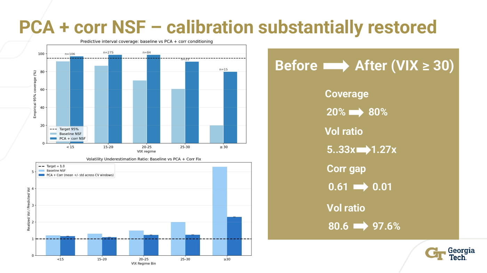

Market Shocks - Risk-Averse Portfolio Optimization
Conditional Neural Spline Flow scenarios for Mean-CVaR portfolio construction under market stress.

Overview
Built a calibration-centered portfolio risk model that replaces a static Gaussian scenario generator with a conditional Neural Spline Flow trained on ten years of S&P 500 daily returns. The model uses VIX as a market-fear context signal and supports Mean-CVaR optimization for a 30-stock portfolio.
Outcome
- Diagnosed why a baseline flow still failed in crisis regimes: collapsed correlations, under-estimated volatility, and too-narrow predictive intervals.
- Added a PCA projection and rolling pairwise-correlation context channel to restore crisis calibration.
- Showed that calibration, not headline Sharpe, was the real improvement for downstream risk-aware optimization.
20% -> 80%Crisis predictive interval coverage
5.3x -> 1.3xVolatility under-estimation factor
0.61 -> 0.01Crisis correlation calibration gap